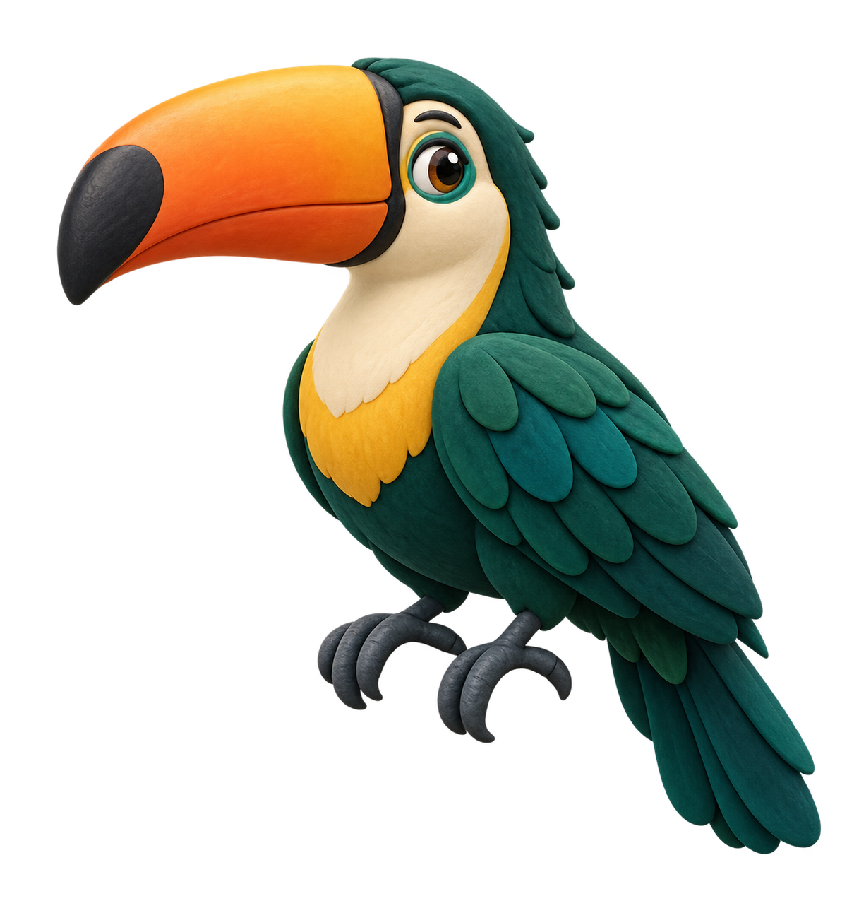
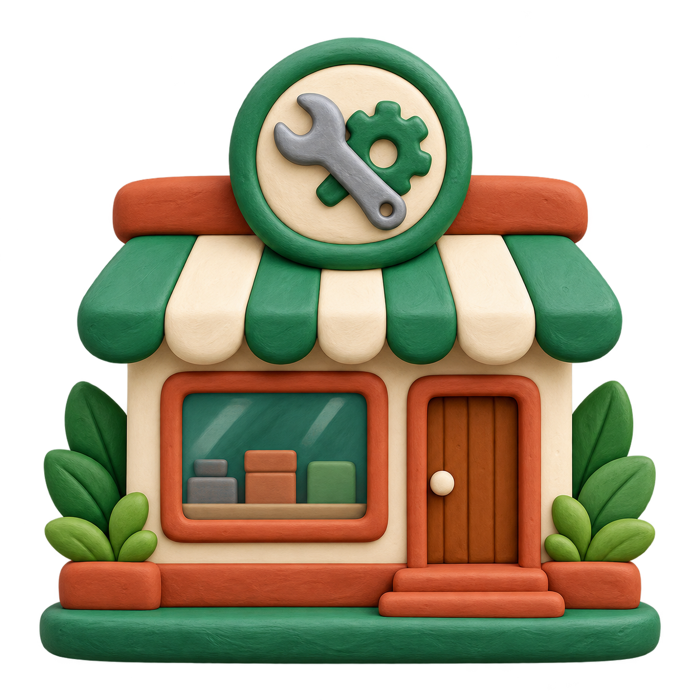
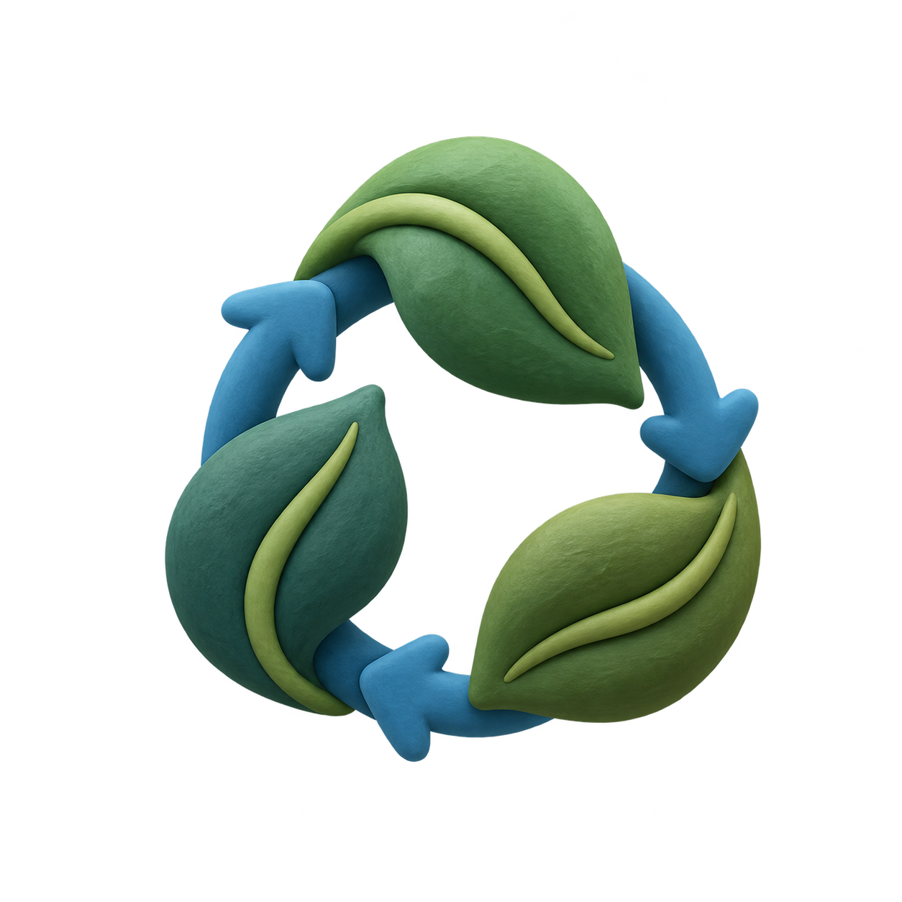
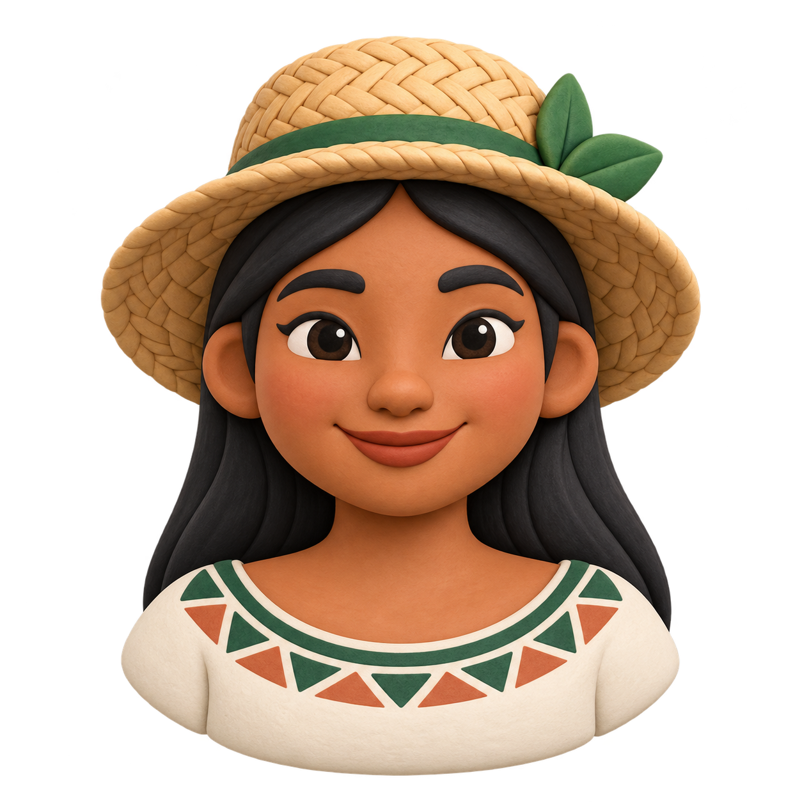
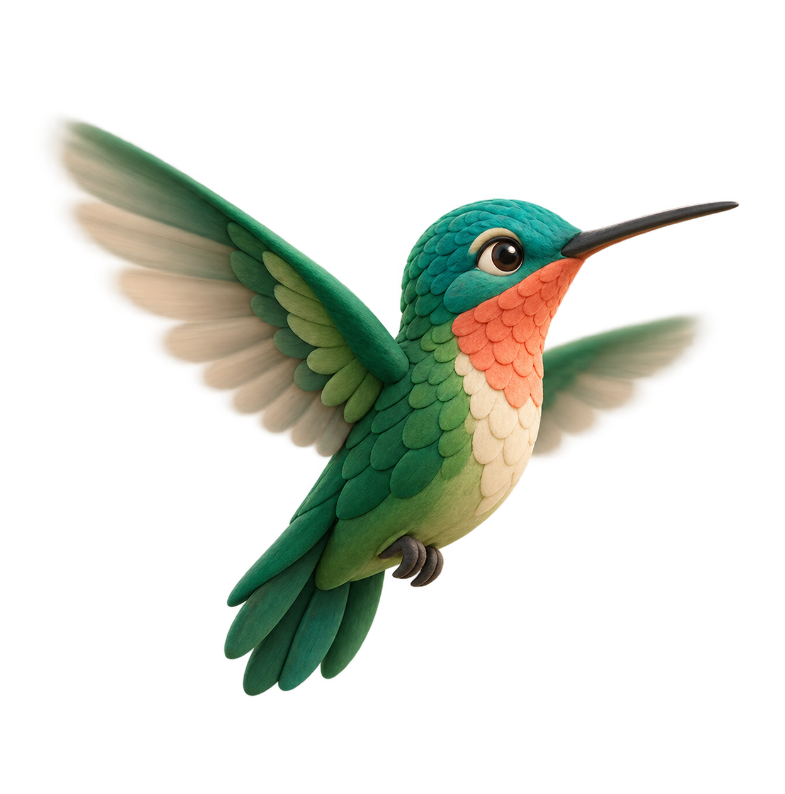
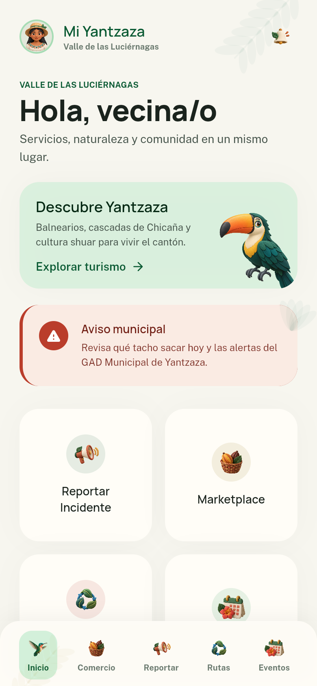
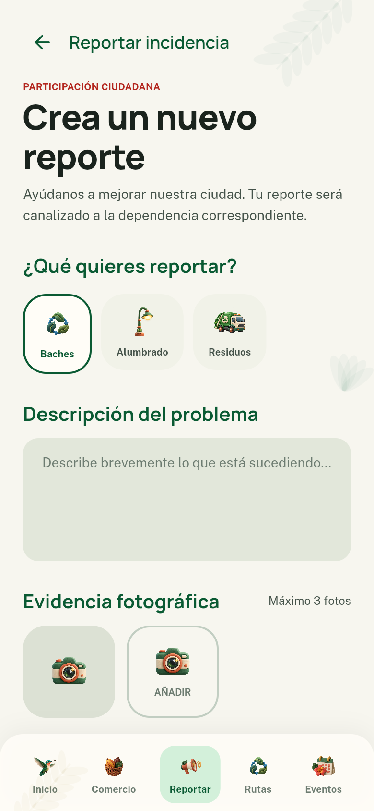

Una ciudad más cercana
Mi
Yantzaza
La ciudad que te escucha, te informa y te acompaña.
Una plataforma para acercar los servicios municipales a cada barrio, cada familia y cada visitante.
ServiciosParticipaciónTurismo
Una plataforma para acercar los servicios municipales a cada barrio, cada familia y cada visitante.




Una guía para compartir nuestros lugares, proteger nuestro entorno y hacer que cada visitante se sienta bienvenido.


